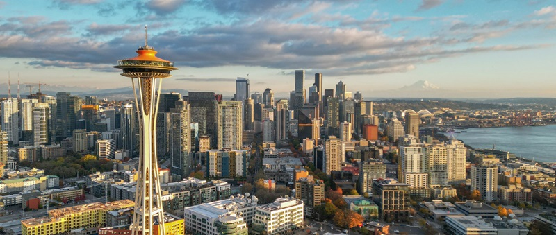

Welcome to Seattle!
Best place to live and experience the Pacific Northwest

Image credit by visitseattle.org
Checkout VisitSeattle website
This is where I live, the Emerald City of PNW - Seattle!
My top 10 things to do and places to go:
4. Chihully Garden and Glass [link]
7. Volunteer Park (Bruce Lee's gravesite is nearby) [link]
9. Boeing Museum of Flight [link]
Webpage created by Jules [1.11.24]
Link to my Github